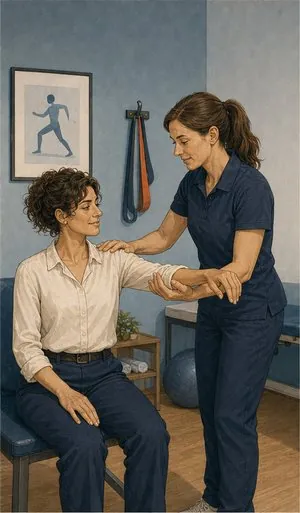

Saúde Empresas
Um benefício dos mais valorizados por quem trabalha, com condições de grupo negociadas caso a caso e enquadramento fiscal a confirmar com o contabilista.
O que pode incluir
Um benefício que
as pessoas usam mesmo.
Ao contrário de outros benefícios, o seguro de saúde é usado — e nota-se. Num plano de grupo o risco é avaliado sobre o conjunto e não sobre cada pessoa, o que pode traduzir-se em condições diferentes das de um plano individual. A comparação só se faz com a proposta em mãos.
Ambulatório
Consultas, exames e tratamentos na rede convencionada, com coparticipação reduzida no acto.
Internamento e cirurgia
A cobertura de capital mais elevado e a que sustenta todo o plano.
Estomatologia
Habitualmente a cobertura mais usada em planos de empresa, e das mais valorizadas.
Extensão ao agregado familiar
Cônjuge e filhos podem ser incluídos, com o custo suportado pela empresa ou pelo colaborador.
Condições de adesão
Consoante a solução e a dimensão do grupo, as exigências de questionário clínico podem variar. É um dos pontos a confirmar na proposta.
Carências
Os prazos aplicáveis dependem da solução contratada e podem diferir dos de um plano individual. Confirmam-se antes de subscrever.
Sem letra pequena
Onde acaba
a cobertura.
Uma leitura geral, para ter ideia clara antes da conversa. Cada apólice tem as suas condições — e é por isso que as lemos consigo, uma a uma.
Ver o que está e o que não está coberto lista indicativa
Normalmente coberto
- Todos os trabalhadores permanentes, segundo critério objectivo e idêntico.
- Rede convencionada com preços de tabela reduzida.
- Internamento, cirurgia e ambulatório, nos capitais contratados.
- Estomatologia, quando incluída no plano.
- Agregado familiar, se a empresa optar por essa extensão.
Normalmente excluído
- Planos discricionários só para alguns — perde-se o enquadramento fiscal do artigo 43.º.
- Doenças pré-existentes, quando o grupo é pequeno e há questionário clínico.
- Cirurgia estética sem finalidade reconstrutiva.
- Actos sem prescrição médica ou sem indicação clínica.
- Prestadores fora da rede, salvo em regime de reembolso parcial.
Informação resumida e de carácter geral. As coberturas, limites, exclusões, franquias, carências e demais condições aplicáveis são as constantes da informação pré-contratual e contratual do produto efectivamente proposto.
Quem define coberturas, capitais, franquias e exclusões é a companhia. Consulte a página oficial do produto antes de decidir — e traga-nos as dúvidas.

Para quem
Situações que
vemos todas as semanas.
Empresa pequena
A partir de um punhado de pessoas já é possível estruturar um plano de grupo. Se compensa face a apólices individuais é conta que fazemos com a proposta em mãos.
Dificuldade em reter pessoas
Num mercado apertado, o seguro de saúde pesa mais na decisão de ficar do que um aumento equivalente — porque o aumento é tributado e o seguro, cumpridos os requisitos, não.
Equipa com idades muito diferentes
Num plano individual, o colaborador de 55 anos paga muito mais do que o de 30. Num plano de grupo o prémio é médio, o que torna o benefício mais justo e mais barato de gerir.
Perguntas frequentes
O que nos
perguntam ao balcão.
A partir de quantos colaboradores é possível?
A Generali Tranquilidade apresenta Saúde Empresas para um ou mais colaboradores, com escalões de solução distintos. As condições concretas dependem da dimensão e do perfil do grupo.
O gasto é dedutível em IRC?
O artigo 43.º do Código do IRC aceita estes gastos como custo fiscal até ao limite de 15% das despesas com pessoal, desde que o benefício seja atribuído segundo critério objectivo e idêntico para todos os trabalhadores permanentes.
É matéria fiscal e depende da situação concreta da empresa: confirme sempre com o seu contabilista certificado antes de contar com o benefício.
Tenho de incluir toda a gente?
Para efeitos do enquadramento fiscal do artigo 43.º, o critério tem de ser objectivo e idêntico para todos os trabalhadores permanentes. Distinguir por antiguidade ou por categoria segundo regras claras é possível; escolher pessoas a dedo não é.
Um colaborador pode recusar?
Pode, manifestando a recusa por escrito, datada e assinada. Segundo entendimento da Autoridade Tributária, essa recusa individual não prejudica o enquadramento do plano para os restantes.
O que acontece quando alguém sai da empresa?
A cobertura cessa na data de saída. Várias companhias permitem a continuidade num plano individual, mantendo as carências já cumpridas — é uma condição que vale a pena negociar à partida.
Um benefício que se usa
e que se nota.
Diga-nos quantas pessoas são e as idades. Simulamos o plano de grupo e comparamos com o custo individual.
Sem compromisso. Não usamos os seus dados para mais nada.